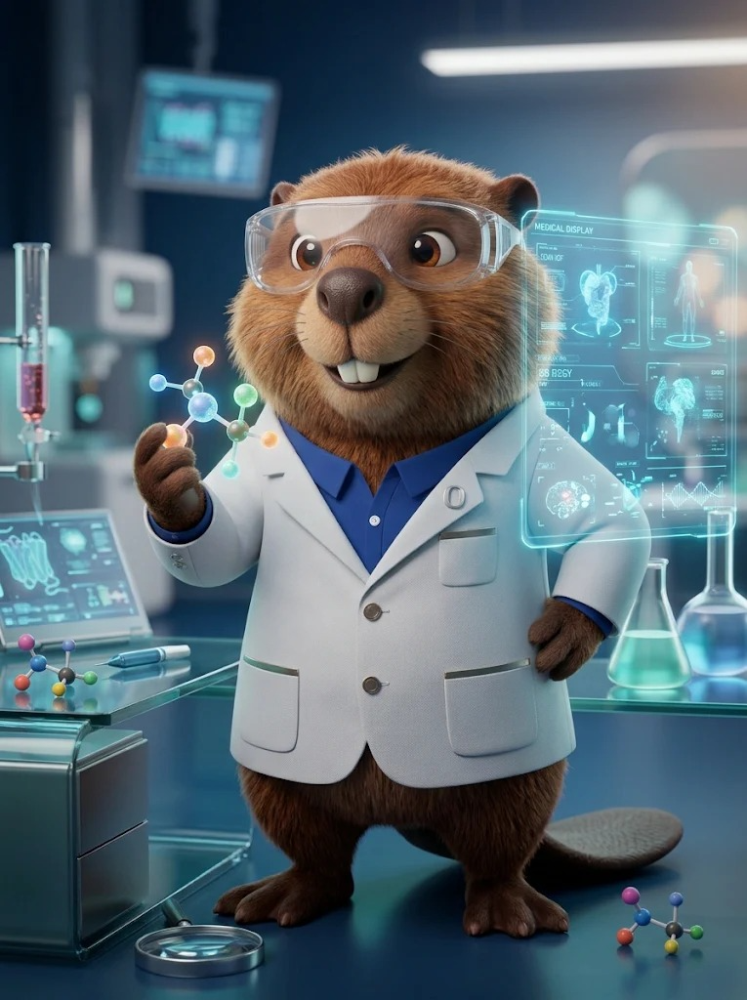

Tap Start Camera to begin.
Waiting for your question…
Responses are limited to the bundled FAQ.
Prototype only. Not for clinical decisions. Voice recognition may use a browser-managed online service. Camera is displayed locally; no video is uploaded by this page. Requires HTTPS and camera/microphone permissions.